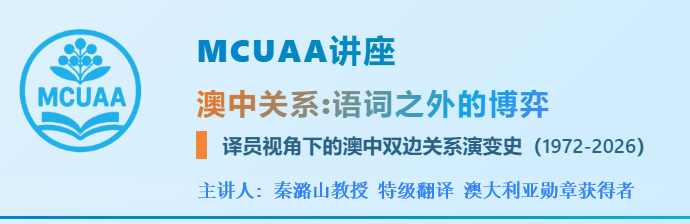
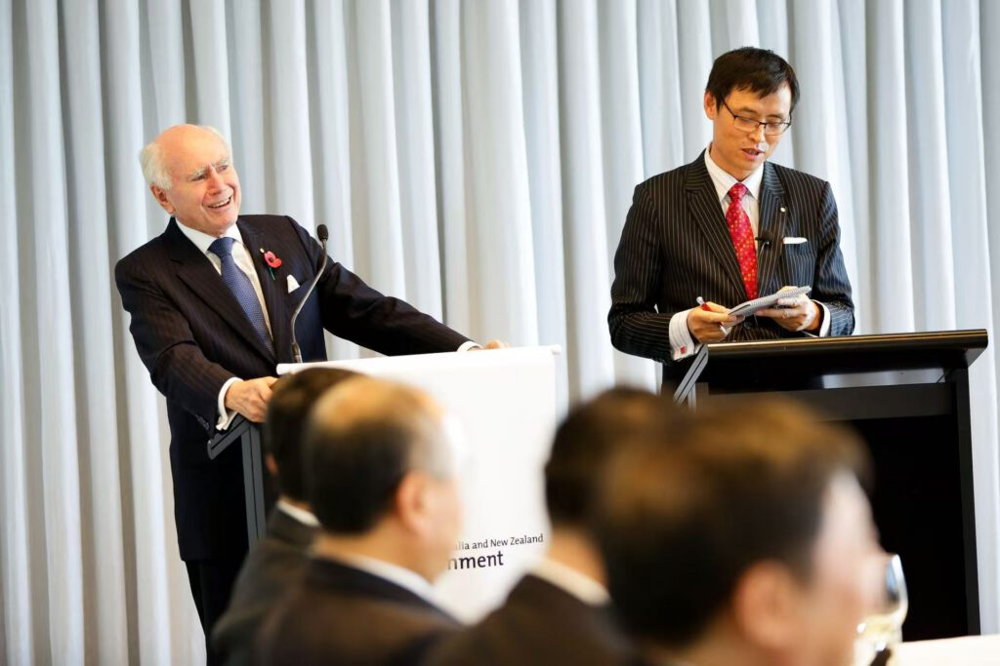
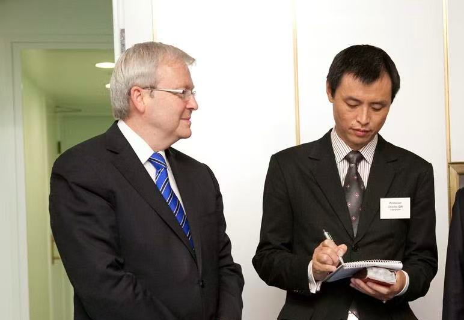
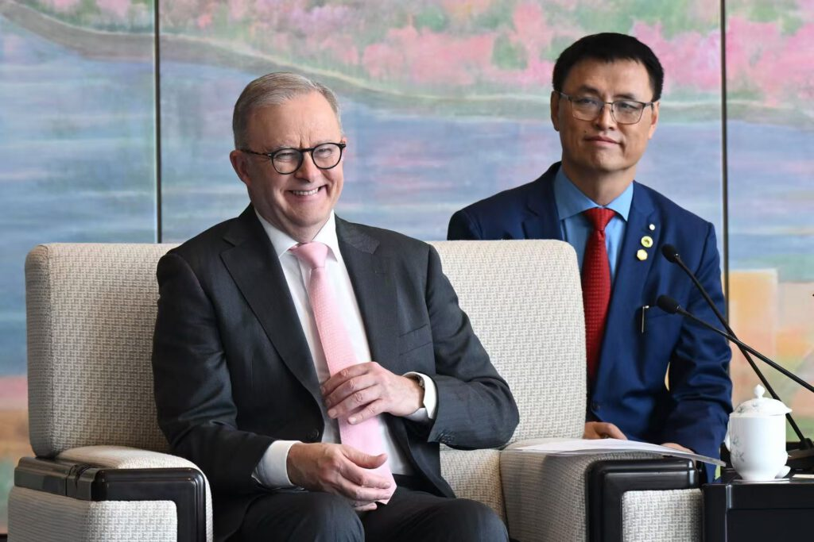

3月25日晚上, 由墨尔本中国高校校友会联盟（MCUAA）主办、墨尔本东南大学校友会协办的的专题讲座- “澳中关系:语词之外的博弈 —译员视角下的澳中双边关系演变史（1972-2026）” 顺利举行。本次讲座特邀在国际口译与外交交流领域享有盛誉的专家、澳大利亚勋章获得者秦潞山教授担任主讲，吸引了众多校友参与。

讲座伊始，MCUAA主席范志良博士隆重介绍了主讲嘉宾。秦潞山教授为国际会议口译员协会（AIIC）会员、蒙纳士大学院士及行业研究员，并担任东南大学、四川大学等多所高校客座教授。作为国际同声传译专家，他长期活跃于全球重大外交场合，曾为澳大利亚历任总理、总督及多位联邦部长、州长提供翻译服务，同时也为中国国家主席习近平、江泽民、胡锦涛，以及国务院总理温家宝、李克强、李强等领导人担任口译，并参与多项涉及美国总统的外交活动翻译工作。他亲历并参与多场具有历史意义的中澳双边会晤与国事访问，包括近年来的高层互访。凭借卓越的语言能力与深厚的跨文化理解，秦教授在长期外交实践中架起了中澳乃至国际高层交流的重要桥梁。
秦教授首先在理论层面从“高语境”与“低语境”的文化差异切入，揭示澳中沟通中的深层张力。澳大利亚作为典型低语境文化国家，强调逻辑、直接与清晰表达；而中国则属于高语境文化，更重含蓄表达、隐喻沟通与“面子”的维护。这种根本差异使同一表达在不同文化语境中可能产生截然不同的解读。因此，口译员在实践中往往需要通过“模糊化处理”与语用对冲策略，避免直译带来的误解与冒犯。这种文化错位，构成了澳中关系长期存在的重要隐性障碍。
秦教授指出澳大利亚长期面临所谓“中国素养”（China literacy）的不足，即精通中文与理解中国政治语境的决策者稀缺。这导致政策制定在很大程度上依赖“二手翻译”，增加了误判风险。尤其是在解读中国官方文件与政策信号时，若缺乏语境理解，容易将策略性表达误读为立场变化。
在历史演进方面，秦教授讲座按时间顺序梳理了澳中关系的发展，并强调各时期语言策略的变化：
1972年建交前，双方长期处于意识形态对立与沟通隔绝状态，政治话语中充斥“黄祸论”“共产主义威胁”等排斥性叙事。惠特拉姆政府上台后迅速推动中澳建交，在建交公报中对“recognize”与“acknowledge”的精细区分，体现了外交翻译的高度策略性。在这一过程中，斯蒂芬·菲茨杰拉德等关键人物发挥了“语境解码者”的作用。他不仅承担语言翻译，更负责解释中国高度政治化的话语体系，并向中方传递澳大利亚作为独立外交行为体的新定位。翻译实践同时推动了两种不同意识形态话语体系之间的对接，通过引入“相互尊重”“求同存异”等表达，双方逐步建立起可持续对话的共同语言框架。随着使馆设立与官方交流机制的建立，双边沟通逐步制度化，形成了早期的外交与专业翻译体系，标志着关系从“语义隔绝”迈向“话语可对接”。然而，这一阶段的沟通仍高度依赖少数精通双语与语境的外交精英，社会层面的语言与认知基础尚未形成。
弗雷泽时期，在冷战背景下，中澳在“反苏”叙事上形成一定词汇共振，外交语言呈现阶段性契合。同时，1978年澳中理事会(Australia-China Council)的成立推动了语言与文化交流向民间延伸，翻译逐渐从高层政治走向教育与文化领域，并将对华接触政策固化为“跨党派稳定共识”，对中澳关系的语言结构产生了深远影响。1980年李先念副总理访澳，双边签署科技协议，标志着交流重心的转移。 外交口译词汇迅速从安全地缘转向“四个现代化”、“技术援助”和“外商投资”。 经济建设词汇的涌现为后续十年中澳关系全面转向经济合作铺平了语言道路。
霍克与基廷时期被视为澳中关系的“黄金阶段”。澳中关系从“战略接触”推进为“经济嵌入”，使外交语言全面转向“互补性与市场协同”的经济叙事体系。在1980年代中澳高层交流中，翻译工作不仅涉及语言转换，还涉及经济概念的结构重构。例如“iron ore”在澳大利亚语境中是资源出口品，而在中国语境中逐渐被理解为“工业化基础支撑体系”，体现出经济叙事的跨语言再编码过程。然而，1989年事件使中澳外交语言短暂转向以人道主义与人权为核心的道德框架，使关系出现张力。此后通过“静默外交”与语境隔离，双方在一定程度上实现政治与经济议题的分轨处理, 外交语言重新回到以利益与稳定为核心的实用主义框架。基廷的“融入亚洲”战略不仅是地缘政治调整，更通过外交语言重构，将澳大利亚从“西方延伸国家”重新编码为“亚太共同体成员”，从而推动中澳关系进入区域身份叙事的新阶段。霍克和基廷推动建立APEC， 将中国深度嵌入基于规则的区域经济架构中。双边代表开始熟练使用“贸 易自由化”、“关税减免” 等共同的多边经济术语。共同经济话语体系大幅降低了跨文化沟通成本，让两国在全球化中找到更多利益契合点。中澳关系在经济层面进入快速扩张阶段，贸易与投资规模显著增长，双边互动高度制度化与商业化。

霍华德时期提出“伟大双轨制”– 现实主义的平衡术:经济上无限接近中国、安全上追随美国的“双轨制”战略, 从而在语言层面制度化了经济依赖与安全依附之间的战略分裂。 口译员在两套平行词汇中切换： 对华谈“战略经济伙伴”，对美谈“自由民主同盟”, 这种词汇的割裂深刻反映了澳 大利亚在亚太地缘政治中的战略矛盾与平衡诉求。这一策略在短期内实现平衡，但也加深了澳大利亚在地缘政治中的结构性张力。1996年台海危机不仅是一次地缘政治冲突，更是一次外交语言压力测试。台海危机致关系降温，中方媒体和外交辞令对澳方支持美国进行了严厉抨击。霍华德在APEC会议上与江泽民主席达成“不互相说教”的语言默契, 确立“相互尊重差异”的务实翻译口径，成功将双边关系拉回并开启十年稳定期。2003胡锦涛主席在澳议会演讲强调经济 “高度互补性”及和平发展，创下双边交流历史高光。口译员传递这些充满善意的中式修辞,极大安抚了澳大利亚当时的战略焦虑。中国作为“纯粹经济伙伴”形象深入人心，标志着霍华德的平衡战略达到顶点。
陆克文与吉拉德时期则凸显语言的“双刃剑”效应。陆克文是首位能流利讲普通话的西方首脑,中方对其跨文化沟通寄予厚望。他经常绕过官方译员直接用中文沟通，取消了外交口译本应提供的语意缓冲地带。语言能力不等于沟通成功，失去战略模糊空间反而增加了高层外交互动的政治风险。2008年北大演讲在“诤友”等表达上的语用选择引发误解，说明语言能力并不等同于跨文化沟通能力。2009年“糟糕之年”中一系列措辞与翻译问题叠加，使双边关系显著降温。2009年底李克强总理访澳，双方发表联合声明，使用“全面合作关系” 等精心雕琢的外交辞令和翻译的模糊性，再次在危机时刻挽救了双边表面的和平。吉拉德政府推出《亚洲世纪白皮书》，大篇幅强调 提升澳大利亚人的“亚洲素养”和中文能力。在词汇战略上，与中国正式确立了“战略伙伴关系” , 翻译层面对双边关系进行了层级提升，试图用制度化的宏大合作词汇锁定最大贸易伙伴。

阿博特时期在经贸合作上取得重要成果，特别习近平主席2014访澳并在议会演讲,双边升级为“全面战略伙伴关系”。2015年签署的中澳自由贸易协定(ChAFTA) 是一项庞大的法律与商业翻译工程，涵盖极细致的市场准入条款。尽管澳洲工会使用“抢走饭碗”等负面词汇抵制, 澳洲政府以“繁荣与就业”叙事赢回话语权。经济利益语言在此时期达到了最高峰，完成了双边利益深度捆绑的里程碑。
特恩布尔时期标志着外交语言的“安全化”转向，“干预”“威胁”等词汇逐渐成为主导。《反外国干预法》及华为5G禁令强化了这一趋势，“基于规则的国际秩序”等概念在中澳之间出现明显语义错位，成为互信下降的重要象征。莫里森时期则成为关系低谷。新冠溯源调查中的不当类比引发中方强烈反应，“14项申诉”与“经济胁迫”等表述标志着双方已进入截然不同的话语体系。社交媒体上的言辞冲突进一步加剧了沟通失效。
阿尔巴尼斯政府上台后提出“稳定化”战略，通过“管控分歧”“相向而行”等中性表达推动关系回暖。然而，媒体翻译偏差（如“四项要求”事件）再次表明，语言仍可能成为外交风险点。2023年阿尔巴尼斯借惠特拉姆访华50周年契机正式访华， 重新拾起“全面战略伙伴关系”词汇。中方逐步取消贸易惩罚性关税，双边沟通从单向说教回归“求同存异”的务实翻译框架。

在总结部分，秦教授指出，过去50年的经验表明，单纯依赖经贸语言难以弥合深层的政治与文化差异。未来澳中关系的发展，不仅取决于地缘政治的选择，更有赖于能否培育真正的“中国素养”，深入理解彼此的语境逻辑，跳出字面翻译的局限。外交的本质，不在于简单寻找词汇上的对等，而在于构建语境上的共鸣；唯有尊重语言与文化的边界，方能建立经得起风浪考验的稳定框架。
在MCUAA理事、墨尔本清华校友会会长陈建博士的主持下，活动进入了互动提问环节，现场气氛热烈。秦教授对现场提出的每一个问题都耐心细致地作出解答。讲座最后，陈建博士代表MCUAA衷心感谢秦教授为大家带来一场精彩纷呈的讲座。讲座内容丰富、见解深刻，让大家收获颇丰、受益匪浅。尤其难得的是，秦教授亲历并参与了这些具有重要历史意义的中澳双边会晤与国事访问，为听众提供了极为珍贵而独特的理解视角呈现了中澳关系的发展脉络与关键细节。
MCUAA将继续致力于为中国高校校友打造高质量学习与交流平台，围绕科技前沿、教育发展、职业规划、人文素养及健康生活等主题推出更多系列讲座，助力校友持续学习、共同成长。
文字：范志良
编辑：何云爽